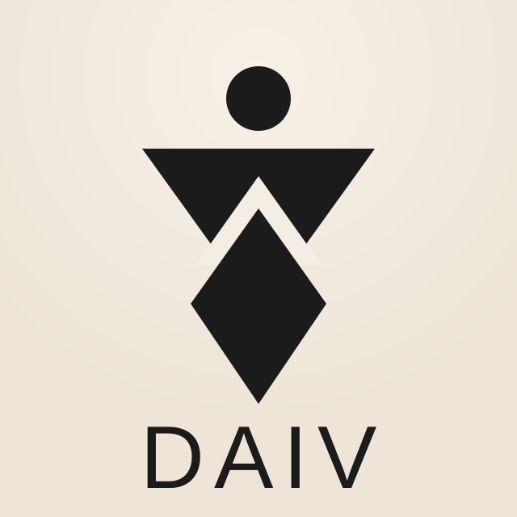

DAIV
Productor / Creativo Aliado
Descripción:
Colaboración con productor independiente enfocado en edición, contenido audiovisual y desarrollo creativo. Participa en la producción interna de El Gremio Música y proyectos especiales.
Ver más